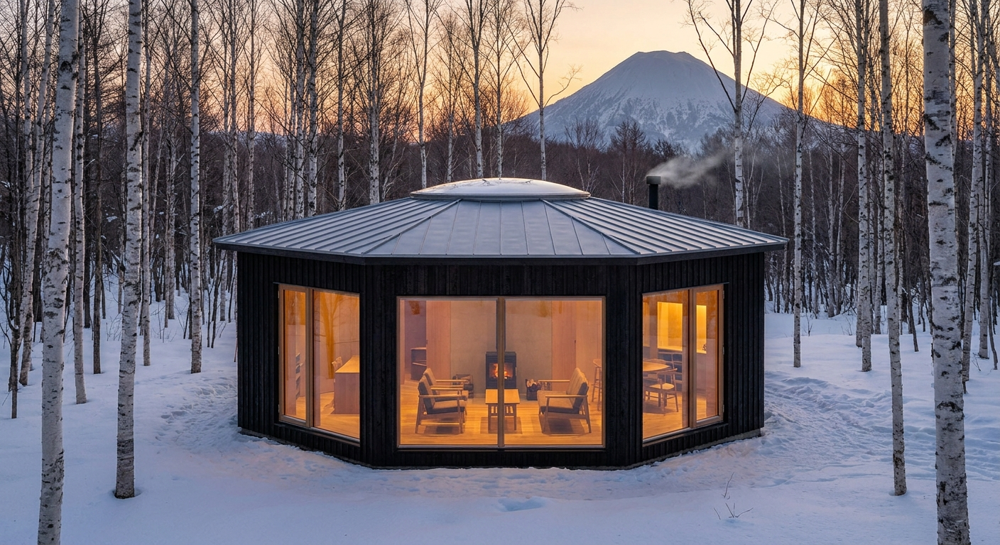
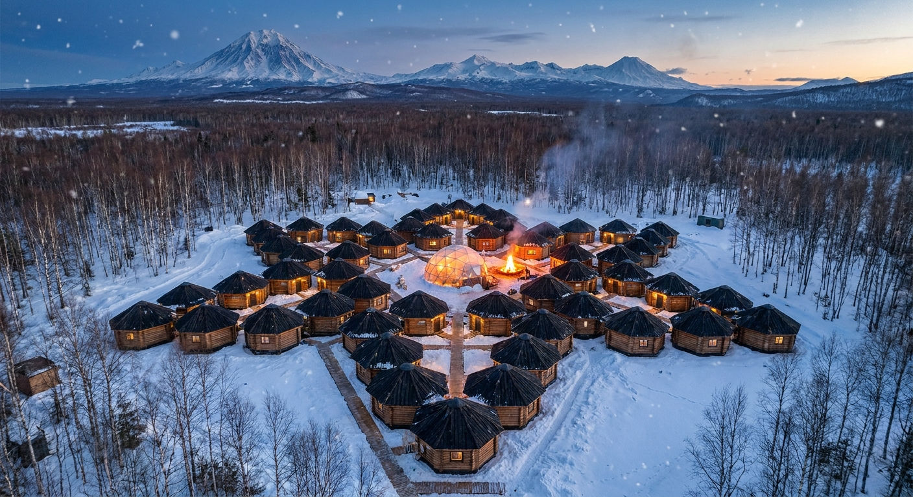
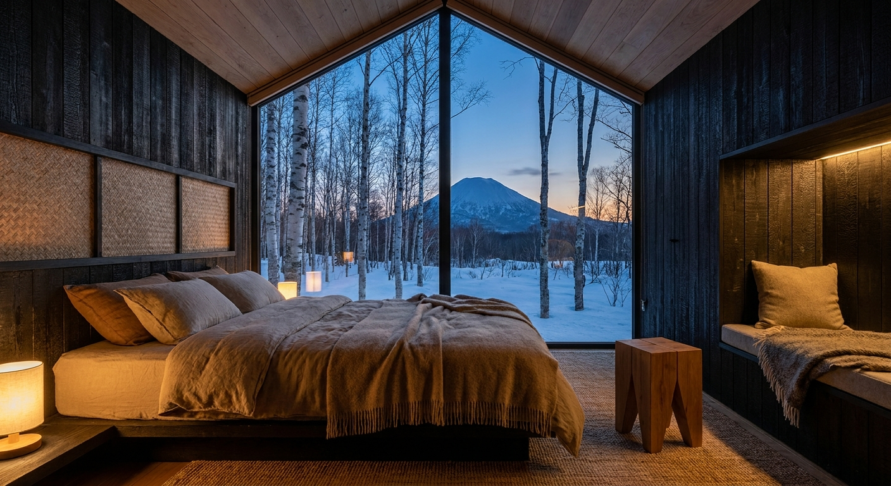
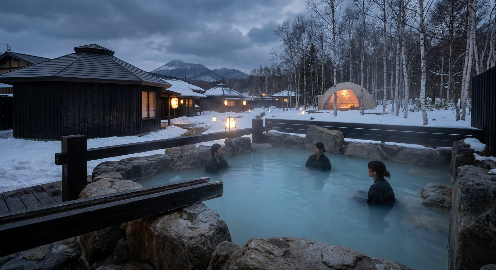
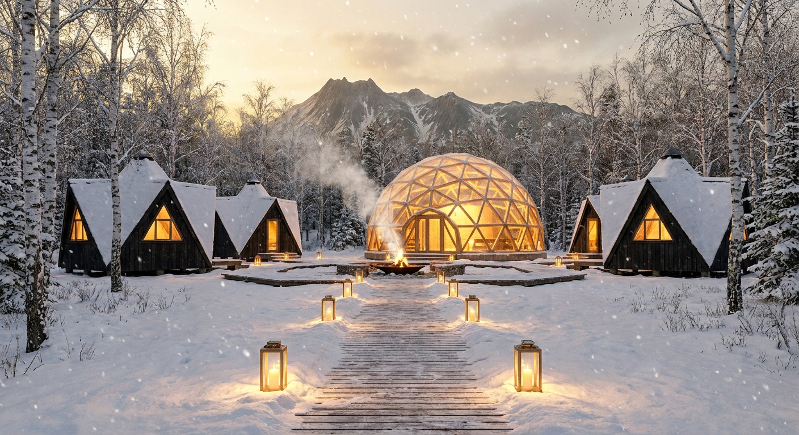
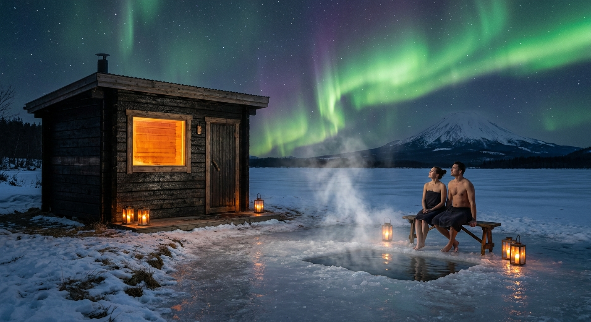
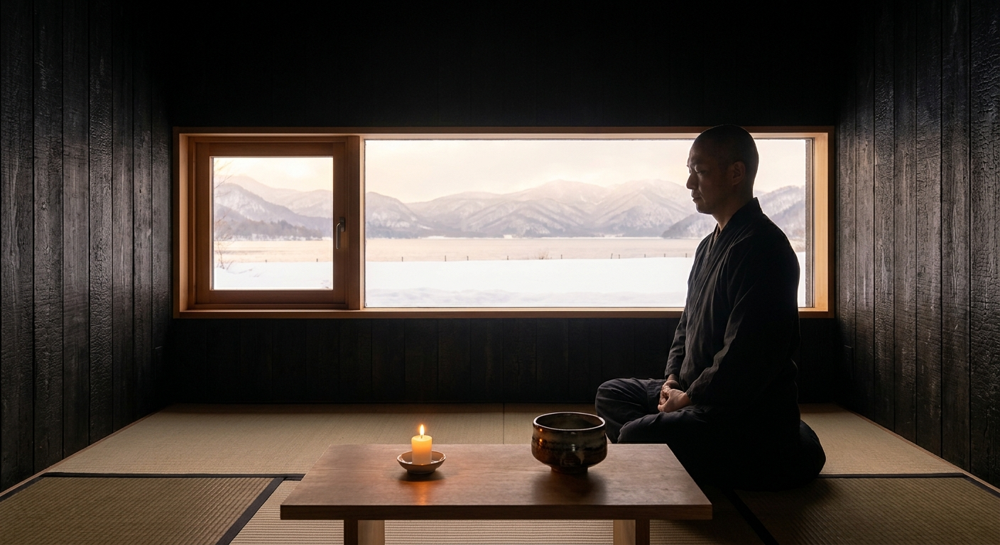
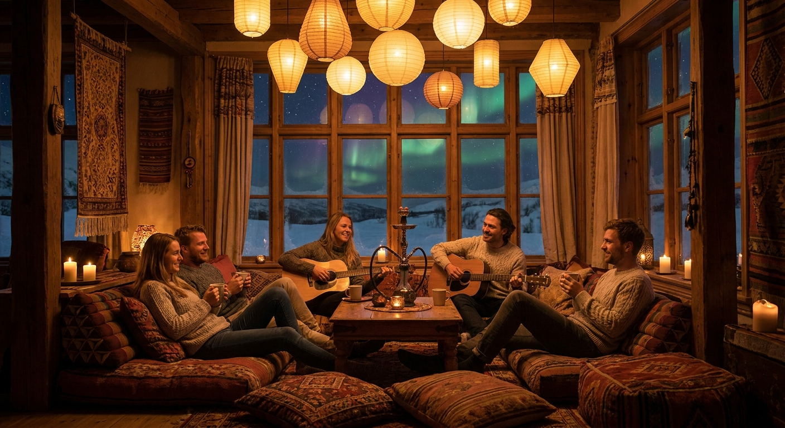

美留和は、日本で一番「言葉がそのまま建つ」場所。
ここで「言葉が、建つ」を、実物で証明する。本人の声で、ご覧ください。
美留和は都市計画区域外、国立公園の普通地域。法規が「言葉がそのまま建つ」のを止めない、日本で一番その条件が揃った土地。だから、ここで証明する——bim.houseに一文を打てば、本当に一棟が建つ。
世界の設計を賢くするための母艦。最初の一棟が建つ場所。
体の一本（柔術）、頭の一本（AI）、住む場所を、ゼロから組み直す実証フィールド。
経済は外から呼び込む。弟子屈は商圏でなく、世界に届くものの起点。
のぼる三角は 創る（体・頭・祭）。くだる三角は 癒す（泊・食・癒）。 六つの頂点に、暮らしのすべてを置く。中心には、いつも火がある。
柔術。体の一本を組む大ドーム道場。
学び、つくる。頭の一本。
火を囲む音楽フェス。
六つの頂点に、十人が眠る。
土地の食。みんなで囲む。
美留和の湯で、ほどく。
同じ六芒星キャビンを増やすだけ。構法もパースもコストも使い回せるから、安く積み上がる。
| フェーズ | 構成 | 収容 |
|---|---|---|
| 初期 | 六芒星キャビン 1棟（6ポッド＋火の間） | 約10人 |
| 拡張 | 同型キャビン6棟＋中心ドーム道場 | 約60人 |
| 将来 | 外周6棟＋温泉・食堂（村全体が六芒星） | 約100人 |
六芒星は象徴としては最強だが、建物の形としては鋭角がデッドスペース・熱橋になり、星形は平面充填できない。そこで棟は六角形（ハニカム）＝無駄な角がなく断熱効率が高く、隣と辺を共有して無限に増やせる。一方村の配置で六芒星を描く。効率と象徴、両取り。

六面の壁、中心に火。鋭角ゼロ・最小周長で最大面積＝断熱に強い。

ハニカムの集合が、空から見ると六芒星。象徴は“配置”で守る。
ハイブリッド村のBIM（構造PASS・houkiは建てる単位＝個別棟で担保）：u-100-ykvchg15

三角窓いっぱいに、雪と山。焼杉の壁に守られて眠る。

湯けむりの向こうに、火の灯るドーム。一日をほどく。

灯篭の道をたどると、火とドームが迎える。
中心の火から、すべてが放射する——水と熱で整え、静かな部屋でこころを鎮め、音と仲間で遊び、道場で組み、弟子屈の自然がそれを包む。

サウナ→氷の水風呂→満天の星で外気浴。温泉と暖炉で芯から温める。

雪と湖を切り取る低い窓。火を見て、茶を点て、ただ静かに。

火を囲んで歌い、奏で、語らう夜のラウンジ。
♨ 温泉／🧖 サウナ・水風呂・外気浴／🔥 暖炉・焚き火／🏊 屋内温水プール（季節）
🧘 瞑想室／🍵 茶室／✨ 星見台（弟子屈の満天の星）
🎶 音楽スタジオ／🎤 カラオケ／💨 シーシャラウンジ
🥋 道場（柔術）／❄ 雪原ランニング・スノーシュー
⛰ 山／🌊 川・湖／🐦 野鳥／🌨 きれいな雪／🌌 オーロラと星空
すべての体験が、中心の火と大ドームから放射する。
夢（パース）と、建つ証拠（bim.house のBIM）を、同じ画面に重ねる。 一体＝村全体の配置（16棟・構造 PASS）、個別＝建てる1棟（houki・構造ともに PASS）。
「パース」で夢を見て、「BIM」で建つことを確かめる。同じ村の、一体と個別を、同じ画面で。
bim.house の簡易判定でNG項目ゼロ。※実際の確認申請は指定確認検査機関による（別途）。
偏心率・剛性率・柱梁の簡易検定通過。※詳細な許容応力度計算は構造設計者が実施（別途）。
籾殻断熱SIPs・くん炭・焼杉。地のもので組む。
bim.house の BOM × カタログ実価格＋原単位 takeoff による概算（通貨 JPY・≈USD は¥150換算）。実施設計・相見積で変動。
| 区分 | 規模 | 概算（税込） | ㎡単価 | 工期 |
|---|---|---|---|---|
| 個別棟 | 120㎡ | ¥23,203,198 ≈ USD 155,000 | ¥193,360 | 11週 |
| 中心ドーム道場 | 400㎡ | ¥63,451,218 ≈ USD 423,000 | ¥158,628 | 18週 |
| 村全体（100人） | 12棟＋ドーム | ≈ ¥342,000,000 ≈ USD 2.28M | 建物のみ | 段階施工 |
いまの入口は設計予約金 ¥50,000〜（≈ USD 330）。実BOM：個別棟・ドーム。村全体＝個別棟実見積×12＋ドーム。土地・造成・インフラ引込・浄化槽・設計料・外構は別途（遠隔地ゆえ大きい）。量産効果・現場費は未織込み。
六芒星キャビンを1棟貸し／村貸し。10人→100人にスケール。
火を囲むステージ。チケット＋物販。冬のオーロラ回。
柔術＋AI合宿。※企業版ふるさと納税は自治体の地域再生計画認定＋寄附が前提で、研修費（対価性あり）とは別枠。
house SKU・予約金、PermitPack（確認申請書類）の販売。
いま始められる入口：設計予約金 ¥50,000〜（≈ USD 330）。※宿泊の本予約とは別。